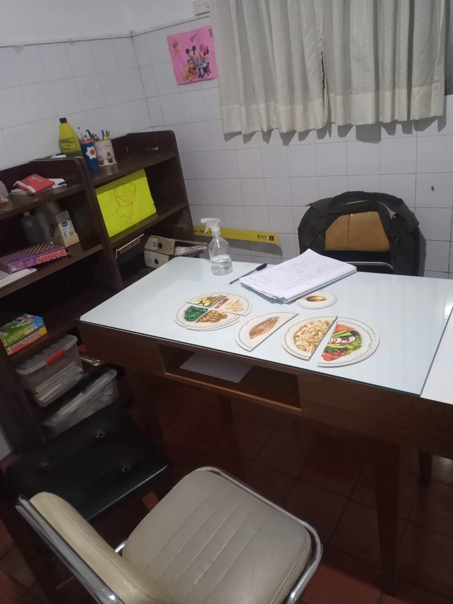

Zona Sur (Burzaco)
Adolfo Alsina 569
(entre 25 de Mayo y Amenedo)
011 3010-8842
Si querés cambiar, con gusto te acompañaré en este viaje

Adolfo Alsina 569
(entre 25 de Mayo y Amenedo)
011 3010-8842
Beauchef 477
(Entre Juan Bautista Alberdi y Formosa)
011 3010-8842
Avenida Rivadavia 5908
(casi esquina Puan)
011 3010-8842
Conoceré tus gustos alimentarios, qué te gusta y qué no, asi como tu estilo de vida (tipo de trabajo, actividades físicas que realizas), horarios, etc. De este modo podré diseñar una dieta equilibrada, pero siempre fácil de seguir.
La educación nutricional debe estar formada por un plan de alimentación personalizado y equilibrado con las proporciones adecuadas, según cada persona, de proteínas, grasas y carbohidratos, así como de vitaminas y minerales.
La práctica de actividad física en cualquiera de sus modalidades es esencial para mantener un estilo de vida saludable. En lo que respecta a la nutrición en el deporte, nuestro enfoque comienza con una entrevista inicial en la que recopilamos información para crear un historial clínico y dietético completo. Esto incluye datos antropométricos como peso y talla, así como el tipo de deporte que practica, la frecuencia y la duración de su actividad física, y los objetivos específicos que desea alcanzar el paciente. Durante las consultas posteriores, trabajamos en conjunto para lograr una serie de metas, que incluyen el aumento de la masa muscular al tiempo que se reduce la grasa corporal, el incremento de la fuerza para mejorar el rendimiento en el ejercicio, y el ajuste de la ingesta de proteínas post ejercicio para recuperación y carbohidratos para proporcionar la energía necesaria durante la actividad física. Nuestro enfoque se centra en brindar una asesoría integral que combine la actividad física con una nutrición adecuada para optimizar el desempeño deportivo y promover un estilo de vida saludable en general.
En lo que respecta a mi experiencia en la atención de pacientes internados, he tenido el privilegio de trabajar en diversas instituciones sanitarias, entre las que destaca mi participación en el Hospital Garrahan. Durante un período de un año, tuve la oportunidad de realizar un curso de posgrado y desempeñarme en las salas de internación intermedias/moderadas. En la actualidad, tengo el honor de formar parte del equipo de nutricionistas de la Clínica y Maternidad Suizo Argentina, y me siento realizada, de ser parte de esta institución. En cuanto a las patologías que abordo, tanto en pacientes internados, como en consultorio, mi experiencia abarca una amplia variedad de condiciones médicas. En todos estos casos, considero que la intervención del nutricionista es esencial para implementar planes de alimentación adecuados, con el objetivo de prevenir complicaciones y frenar el progreso de estas enfermedades. Mi compromiso es ofrecer atención integral y personalizada a mis pacientes, garantizando que reciban el mejor cuidado nutricional posible para mejorar su calidad de vida y promover su bienestar general.
Como vegetariana, considero que esta forma de alimentación es saludable, respetuosa
con el medio ambiente y consciente de los derechos de los animales. Me entusiasma
especialmente cuando mis pacientes expresan su interés en hacer la transición hacia el
veganismo o el vegetarianismo.
Durante nuestra primera consulta, abordamos los
nutrientes críticos y cómo obtenerlos a partir de alimentos vegetales. Luego, en la segunda consulta,
desarrollamos un plan de alimentación personalizado, teniendo en cuenta los múltiples factores que rodean a
cada paciente. A lo largo de nuestras interacciones posteriores, revisamos los registros
alimentarios, generamos ideas de menús y profundizamos en el conocimiento del
patrón vegetariano/vegano.
Esta atención individualizada y el seguimiento continuo son esenciales para ayudar a
mis pacientes a lograr una transición exitosa y mantener una dieta equilibrada y
saludable.